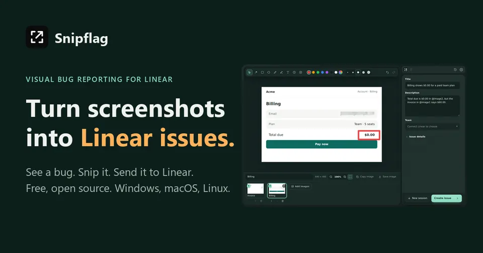
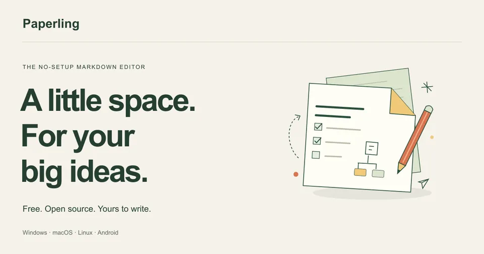
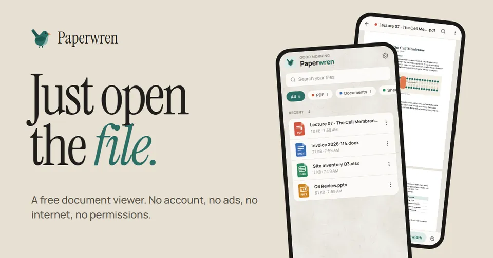
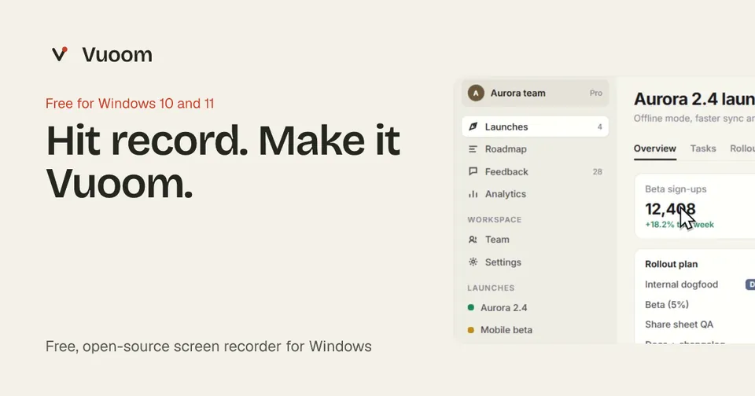
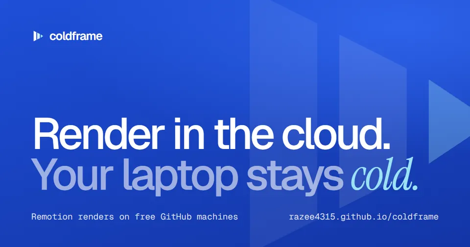

Saqlain Razee · independent software
Five free tools.
One small tree.
I'm Saqlain. I make small, open-source apps for everyday annoyances. Pick one below, or click anywhere to set a bird loose.
The catalogue
Five free tools · all open source
-
Turn screenshots into Linear issues. Snip anything on screen, mark it up, pixelate private bits, and send it straight to Linear.
Windows · macOS · Linux · MIT
Visit Snipflag
-
A calm Markdown editor with live preview, math, diagrams and optional AI. Open a file and start writing.
Desktop · Android · Apache-2.0
Visit Paperling
-
Open PDF, Word, Excel and PowerPoint in a blink. No account, no ads, no internet access, no permissions.
Android · Windows · MIT
Visit Paperwren
-
Record polished demos with automatic zoom, quick edits, offline captions and GIF or MP4 export. No watermark.
Windows · Apache-2.0
Visit Vuoom
-
Render Remotion videos on free GitHub machines instead of your laptop. One setup command, parallel renders, every frame checked.
GitHub Actions · MIT
Visit coldframe